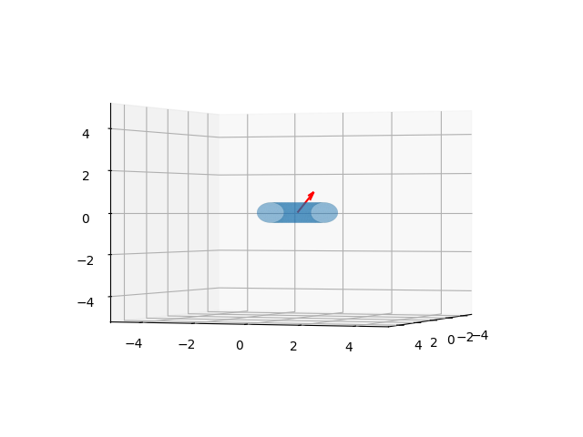
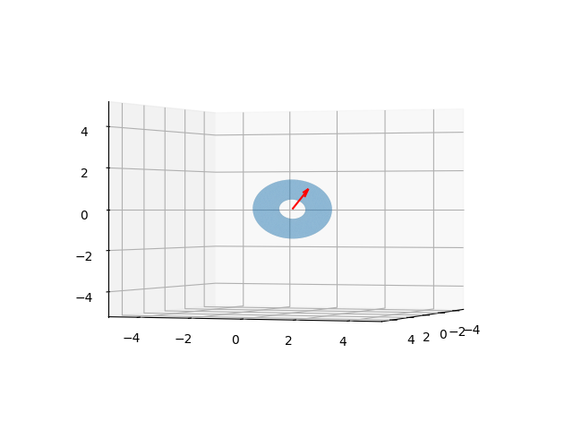

Hareketin Katı-Gövde Denklemleri - 1
Runge-Kutta Hesabı
İleride lazım olacak bir hesapsal yöntemi görelim, katı gövde cisimlerinin hareketi için diferansiyel denklemleri entegre etmemiz gerekiyor, bunun için Runge-Kutta yaklaşımını bir örnek üzerine görebiliriz.
İki boyutlu ortama ağırlığı $m=1$ kg olan bir topu 45 derece açıyla sağ yukarı doğru atıyoruz, uyguladığımız kuvvet 500 Newton. Bu topun gidiş yönü nasıl hesaplanır?
Önemli bir konu uygulanan kuvveti başlangıçta sisteme nasıl dahil edeceğimiz. Burada dürtü / vuruş / darbe (impulse) kavramına bakmak gerekiyor. Kuvvetle hız değişimini ilintilendirmek için Newton'un ikinci kanunu ile başlayalım,
$$ F = \frac{\mathrm{d} P}{\mathrm{d} t} $$
Uygulanan kuvvet momentum değişimine eşittir, ki $P = mv$ olmak üzere. Fakat sonsuz küçük zaman üzerinden iş yapamayız, iki tarafın entegralini alalım,
$$ \int_{t_1}^{t_2} F \mathrm{d} t = \int_{t_1}^{t_2} \mathrm{d} P \mathrm{d} t $$
$$ J = \int_{t_1}^{t_2} F \mathrm{d} t = P(t_2) - P(t_1) $$
Sonuçtaki $J$ dürtü büyüklüğü, kuvvetin zaman üzerinden entegrali, yani bir zaman aralığında uygulanan kuvvetin toplamı. Bu büyüklük momentum üzerinde bir değişime yol açıyor, $P(t_1)$ momentumundan $P(t_2)$ değerine geliyoruz.
Üstteki formül şunu söylüyor, momentum değişimi için bir kuvvetin uygulandığı bir zaman aralığı gerekir. O zaman problem tanımı eksik, 500 Newton'luk kuvvet uyguladık, peki ne kadar süreli? Devam etmeden önce diyelim ki bir saniye, o zaman dürtü 500 Newton $\cdot$ saniye (Ns) olur. Dikkat $m$ değeri değişmediği için tek değişim hız değişkeninde olacaktır, $J = m(v_2 - v_1) = m \Delta v$, yani dürtü sonrası hızda değişim gözleyeceğiz.
Başlangıçta $v_1=0$, dürtü için 500 N $\cdot$ saniye
$$ J = m v_2 - m v_1 = m v_2 - m(0) \to J = m v_2 $$
$$ \to 500 Ns = m v_2 \to 500 \frac{kg \cdot m/s^2}{1 kg } \cdot s = v_2 \to v_2 = 500 m/s $$
Artık sistem denklemini entegre edebiliriz, sistem $\dot{x} = v_x$, $\dot{y} = v_y$ $\dot{v} = a$. Sürekli etki eden tek ivme etkisi yerçekimi $g$. Sistem bir vektör üzerinden temsil edilebiliyor,
$$ \left[\begin{array}{c} \dot{x} \\ \dot{y} \\ \dot{v} \end{array}\right] = F(\vec{x},t) $$
import numpy as np
import matplotlib.pyplot as plt
def rk4_step(func, dt, t, y):
k1 = dt * func(t, y)
k2 = dt * func(t + 0.5 * dt, y + 0.5 * k1)
k3 = dt * func(t + 0.5 * dt, y + 0.5 * k2)
k4 = dt * func(t + dt, y + k3)
return y + (k1 + 2*k2 + 2*k3 + k4) / 6
def projectile_motion_eom(t, X):
x, y_pos, vx, vy = X
g = 9.81 # yercekimi
m = 1 # topun kutlesi
dx_dt = vx
dy_dt = vy
dvx_dt = 0.0
dvy_dt = -g
return np.array([dx_dt, dy_dt, dvx_dt, dvy_dt])
m = 1.0
initial_force = 500.0 # baslangic kuvveti, Newton
force_direction = np.array([1.0, 1.0])
force_direction = force_direction / np.linalg.norm(force_direction)
dt = 0.01 # zaman dilimi (saniye)
# Initial position [x0, y0]
x0 = 0.0
y0 = 0.0
initial_acceleration = initial_force / m * force_direction
initial_velocity_magnitude = initial_force / m
initial_velocity_vector = initial_velocity_magnitude * force_direction
vx0 = initial_velocity_vector[0]
vy0 = initial_velocity_vector[1]
print(f"Baslangic Hizi: [{vx0:.2f} m/s, {vy0:.2f} m/s]")
initial_state = np.array([x0, y0, vx0, vy0])
time_points = [0.0]
state_history = [initial_state]
current_state = initial_state
current_time = 0.0
while current_state[1] >= 0:
current_state = rk4_step(projectile_motion_eom, dt, current_time, current_state)
current_time += dt
if current_state[1] < 0: break
time_points.append(current_time)
state_history.append(current_state)
state_history = np.array(state_history)
x_positions = state_history[:, 0]
y_positions = state_history[:, 1]
vx_values = state_history[:, 2]
vy_values = state_history[:, 3]
plt.figure(figsize=(10, 6))
plt.plot(x_positions, y_positions)
plt.xlabel('(m)')
plt.ylabel('(m)')
plt.grid(True)
plt.axhline(0, color='black', linestyle='--', linewidth=0.7) # yer
plt.axis('equal')
plt.savefig('phy_005_basics_05_05.jpg')
print(f"\nBitis Zamani: {time_points[-1]:.2f} saniye")
print(f"Son yer: x = {x_positions[-1]:.2f} m, y = {y_positions[-1]:.2f} m")
print(f"Son hız: vx = {vx_values[-1]:.2f} m/s, vy = {vy_values[-1]:.2f} m/s")
Baslangic Hizi: [353.55 m/s, 353.55 m/s]
Bitis Zamani: 72.08 saniye
Son yer: x = 25484.13 m, y = 0.07 m
Son hız: vx = 353.55 m/s, vy = -353.55 m/s

Rotasyon Matrisi ve Türevi
Bir 3 x 3 dönüş matrisi ile herhangi bir vektörü döndürebileceğimizi biliyoruz. Yersel taşıma daha da basit, 3 boyutlu bir vektör sadece, mevcut konuma ekleyerek yeni konumu elde ediyoruz.
Bir katı gövdeyi parçacıkları üzerinden alırsak, ve bu gövdenin açısal dönüşsel olarak hangi yöne baktığını bir dönüş matrisi $R$ ile temsil edersek, her parçacık üzerinde bu işlemin uygulandığını düşünebiliriz. Ayrıca konumsal taşınma ve bakılan yön başlangıçtaki bir "gövde uzayı"na (body space) göre yapılabilir, gövdenin kütle merkezini dünya kordinatlarının (0,0,0) orijin noktasında ve yönü herhangi bir (başta belli) yöne doğru alalım, hareketler hep bu konuma referansla, onu değiştirecek şekilde düşünülebilir. Mesela gövde üzerindeki, gövde uzayındaki, herhangi bir $p_0$ noktasını düşünelim, $t$ anında bu noktanın dünya uzayındaki konumu
$$ p(t) = R(t) p_0 + x_{CM}(t) $$
ki $x_{CM}(t)$ bir yersel taşınma, ve $R(t)$ açısal dönüş. Tabii taşınma her zaman kütle merkezine uygulandığı için $x_{CM}$ aynı zamanda kütle merkezinin her $t$ anında dünya uzayında olduğu yeri de gösteriyor.

Türeve gelirsek, bir vektör $r$'nin orijin etrafında döndüğünü düşünelim. Herhangi bir anda bu dönüşün açısal hızı $\omega$ çapraz çarpımla hesaplanabilir,

Hız tabii ki sonsuz küçük zamandaki yer değişimi olduğu için onu
$$ \frac{\mathrm{d} r}{\mathrm{d} t} = \omega \times r $$
olarak ta görebiliriz. Şimdi bir katı gövdeyi düşünelim, onun baktığı yön (orientation) bir matris $R$ içinde. Bu matrisin her kolonunda bir eksen var, ilk kolon $x$, ikinci $y$, vs. Eğer gövdenin baktığı yönü $R$ ile temsil ediyorsak tüm bu kolonlar gövde dönerken değişecektir. Eğer dönüş $\omega$ ise her eksenin açısal hızı $\omega$ demek, o zaman bu eksenlerin, $b,c,d$ diyelim, açısal hızı ayrı ayrı $\omega \times b$, $\omega \times c$, $\omega \times d$ olarak bulunabilir, ki bunların her biri aynı zamanda ayrı birer türevdir. Tüm matrisin türevi
$$ \frac{\mathrm{d} R}{\mathrm{d} t} = \tilde \omega \cdot R $$
ki $\tilde \omega$ ile $\omega$'yi eksi bakışımlı [4] bir matris hale getirdik, böylece çapraz çarpımı noktasal çarpım haline çevirmiş oluyoruz [5, sf. 9], [3].
Devam edelim, diğer konuları daha önce bir gövdenin her bakımdan konumunu, statüsünü temsil etmek için gerekli matematiği gördük. Bu konumu $\overline{X}(t)$ ile gösterebiliriz,
$$ \overline{X} = \left[\begin{array}{c} x_{CM}(t) \\ R(t) \\ P(t) \\ L(t) \end{array}\right] $$
Momentum $P(t) = v(t) M$ olduğu için $v(t) = \frac{P(t)}{M}$.
$I(t)$'yi yukarıda gördük, $I(t) = R(t) I_{body} R(t)^T$.
$L(t) = I(t) \omega(t)$ olduğu için $\omega(t) = I(t)^{-1} L(t)$
Hepsini biraraya koyunca $\overline{X}$'nin türevi
$$ \frac{\mathrm{d}}{\mathrm{d} t} \overline{X}(t) = \frac{\mathrm{d}}{\mathrm{d} t} \left[\begin{array}{c} x_{CM}(t) \\ R(t) \\ P(t) \\ L(t) \end{array}\right] = \left[\begin{array}{c} v(t) \\ \tilde \omega \cdot R(t) \\ F(t) \\ \tau(t) \end{array}\right] $$
Katı-Gövde Simülasyonu
Dönüş
Bir örnek gövde üzerinde simülasyon yapmaya uğraşalım. Elimizde bir simit, ya da geometride torus denen bir şekil var. Bu dosya STL denen bir format içinde, detaylar için [6]. Kuvvet uygulama sonrası lineer ve açısal momentum içeren simülasyon için pek çok değişkeni diferansiyel tanımları üzerinden entegre etmemiz gerekiyor, daha basit bir örnek ile, özellikle sabit bir açısal hız üzerinden salt döndürme ile başlamak uygun olabilir. [2]'te tarif edilen döndürme matrisi türevini hatırlarsak,
$$ \frac{\mathrm{d} R}{\mathrm{d} t} = \tilde \omega \cdot R $$
Döndürmeyi bir $\omega$ etrafında düşünüyorduk, $\omega$'nin büyüklüğü açısal dönme hızına tekabül ediyordu, ve $\tilde \omega$ eksi-bakışımlı matris idi.
Tüm bunları entegre edici odeint çağrısının kabul edeceği bir formda
nasıl kullanırız? Bu çağrı düzleştirilmiş bir liste içinde diferansiyel
sonuçların, ve ana değişkenlerin olmasını bekliyor. O zaman $R$'yi kolon bazlı
olmak üzere düzleştiririz, ve gerektiği o listeden matris formuna geçeriz, vs.
from scipy.integrate import odeint
from stl import mesh
def skew(a):
return np.array([[0,-a[2],a[1]],[a[2],0,-a[0]],[-a[1],a[0],0]])
your_mesh = mesh.Mesh.from_file('torus.stl')
prop = your_mesh.get_mass_properties()
R0 = np.eye(3,3)
omega = np.array([1.0,1.0,1.0])
#omega = np.array([0.0,1.0,0.0])
skew_omega = skew(omega)
def dRdt(u,t):
R1x,R1y,R1z,R2x,R2y,R2z,R3x,R3y,R3z = u
R = np.array([R1x,R1y,R1z,R2x,R2y,R2z,R3x,R3y,R3z])
R = R.reshape((3,3)).T
res = np.dot(skew_omega, R)
return list(res.T.flatten())
LIM = 5
STEPS = 20
t=np.linspace(0.0, 3.0, STEPS)
R0 = np.eye(3,3)
u0 = R0.flatten()
u1=odeint(dRdt,list(u0),t)
Üstte görülen mesela R1x $R$ matrisinin 1'inci kolonunun $x$ değişkeni
anlamında.
Simülasyonda simit şeklinin baktığı yön $R$ içinde, ve grafik amaçlı olarak her
seferinde simit şeklini sıfırdan yükleyip son $R$'ye ilerletiyoruz, ve her
adımda bu grafiği basıyoruz. Simülasyonu hesapladık, tüm sonuç u1
içinde, görüntüden bazı seçilmiş kareler altta görülebilir,
import matplotlib.pyplot as plt
from mpl_toolkits import mplot3d
def plot_vector(fig, orig, v, color='blue'):
ax = fig.gca(projection='3d')
orig = np.array(orig); v=np.array(v)
ax.quiver(orig[0], orig[1], orig[2], v[0], v[1], v[2],color=color)
ax = fig.gca(projection='3d')
return fig
for i in range(STEPS):
fig = plt.figure()
axes = mplot3d.Axes3D(fig)
your_mesh = mesh.Mesh.from_file('torus.stl')
R = u1[i].reshape((3,3)).T
your_mesh.rotate_using_matrix(R)
scale = your_mesh.points.flatten()
axes.add_collection3d(mplot3d.art3d.Poly3DCollection(your_mesh.vectors,alpha=0.3))
plot_vector(fig, [0,0,0], omega, color='red')
axes.auto_scale_xyz(scale, scale, scale)
axes.set_xlim(-LIM,LIM);axes.set_ylim(-LIM,LIM);axes.set_zlim(-LIM,LIM)
axes.view_init(azim=20,elev=0)
plt.savefig('/tmp/rotate_%02d.png' % i)



! convert -delay 20 -loop 0 /tmp/rotate*.png /tmp/torus_rotate1.gif
Animasyon sonucu [1]'de.
Torus şekli hakkında bazı istatistikler alttadır.
from stl import mesh
your_mesh = mesh.Mesh.from_file('torus.stl')
prop = your_mesh.get_mass_properties()
print ('hacim',np.round(prop[0],3))
print ('yercekim merkezi (COG)',np.round(prop[1],3))
print ('COG noktasinda atalet matrisi')
print (np.round(prop[2],3))
hacim 4.918
yercekim merkezi (COG) [-0. 0. -0.]
COG noktasinda atalet matrisi
[[ 3.223 -0. 0. ]
[-0. 3.223 0. ]
[ 0. 0. 5.832]]
COG sıfır noktasında olması, ayrıca atalet matrisinin köşegen olması mantıklı çünkü simit şekli simetrik.
Üstteki simülasyonda kuvvetler, lineer, açışal momentum gibi kavramlar gösterilmedi, bir sonraki yazıda tüm kavramların olduğu bir simülasyon olacak, yazıda dönüş matematiği de sayısal açıdan daha sağlam farklı bir yaklaşım kullanıyor olacak.
Kaynaklar
[1] Bayramlı, Animasyon 1, https://www.dropbox.com/scl/fi/l9wjyc2nar8bwucasfqpf/torus_rotate1.gif?rlkey=mhnye63g5auddh7m3e993ic43&st=ttluuezu&raw=1
{kind=link}
[2] Bayramlı, Fizik, Temel Fizik 4, Katı Gövde
[3] Rotenberg, CSE169: Computer Animation, UCSD
[4] Bayramlı, Lineer Cebir, Ders 5
[5] Witkin, Physically Based Modeling
[6] Bayramlı, 3D Baskıya Hazır CAD Tasarımlarına Erişmek, Numpy-STL, https://burakbayramli.github.io/dersblog/sk/2020/08/numpy-stl.html
Yukarı